Un viaje por algunos recuerdos (no tengo foto de todos jaja) que llevo en mi corazón
Haz clic en el botón para comenzar este viaje
Capítulo 1: La Primera Vez que Te Hice Sonreír
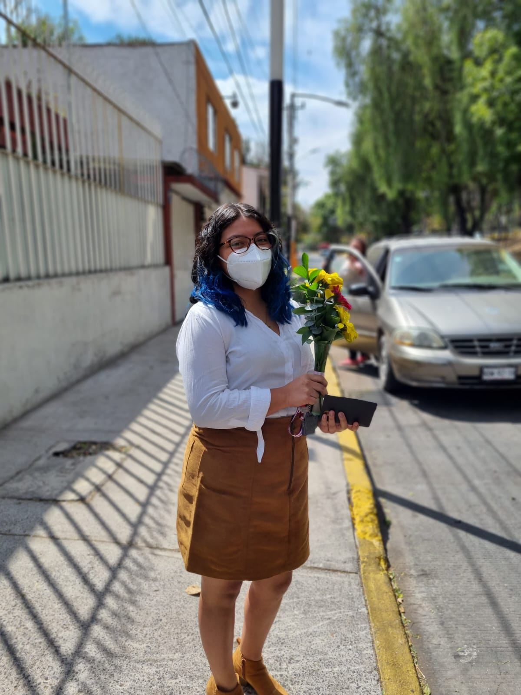
📍 Retorno 108 & Churubusco - 10 de febrero, 2022
Lo que pasó: El primer 14 de febrero que celebramos juntos. Le mandé flores por primera vez a una mujer y que bello que se trate de ti.
Lo que sentí: Estaba nervioso porque no sabía nada de flores, pero solo pensaba en hacerte sonreír. Fue cuando entendí que tu felicidad empezaba a hacerme feliz a mí.
Capítulo 2: El Reencuentro que Confirmó Todo
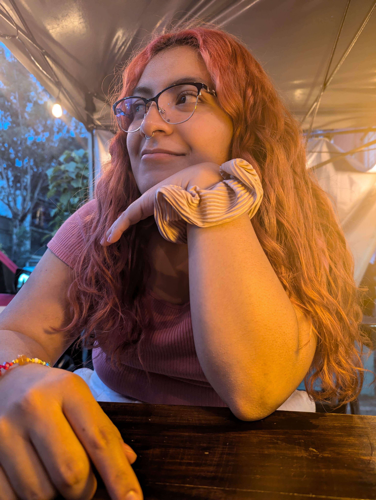
📍 Café cerca de tu casa - 25 de agosto, 2024
Lo que pasó: Después de darnos un tiempo, volvimos a salir. Recién te habías puesto brackets.
Lo que sentí: Estaba nervioso y triste porque estabas un poco distante (lo entiendo), pero al verte supe que me seguías gustando tanto como la última vez que te vi. Confirmé que lo que sentía era real y no murió con el tiempo.
Capítulo 3: La Sonrisa que Se Volvió De Mis Favoritas (todas me gustan)
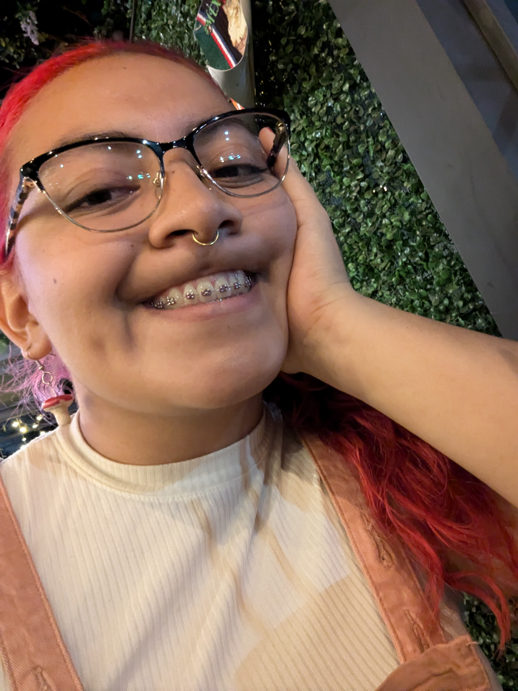
📍 Nuestra cafetería favorita - 20 de septiembre, 2024
Lo que pasó: Un día normal en uno de nuestros lugares favoritos, pero con esa sonrisa tuya tan especial que haces al ponerte nerviosa.
Lo que sentí: Me di cuenta que quería ver esa sonrisa tan única todos los días. Se volvió mi favorita hasta el punto de hacerla mi fondo de pantalla. Cada vez que desbloqueo mi celular, recuerdo por qué me haces sentir en las nubes.
Capítulo 4: La Confianza de Tu Sueño
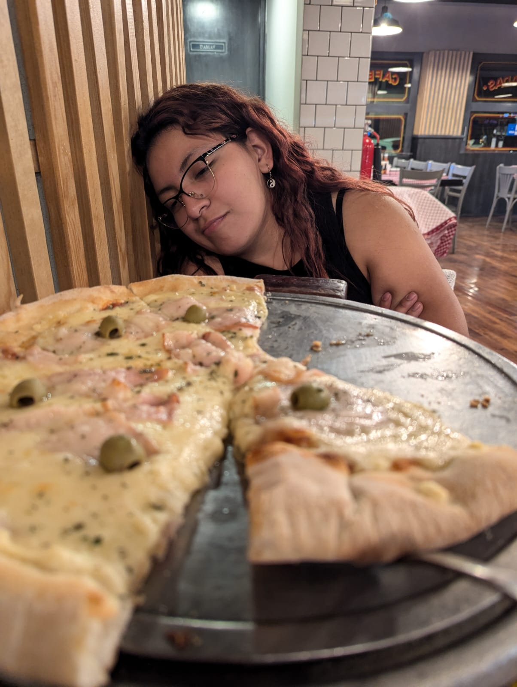
📍 Central de Pizzas - 7 de diciembre, 2024
Lo que pasó: Teníamos una semana de novios. Te dio sueño y te empezabas a quedar dormida (que raro).
Lo que sentí: Me da ternura que te de tanto sueño conmigo. Aunque a ti no te gusta dormir cuando estás conmigo, yo empecé a amar que tengas esa confianza conmigo. Siento el deber de proteger tu sueño y tu paz.
Capítulo 5: Parte de Tus Metas y Tu Familia
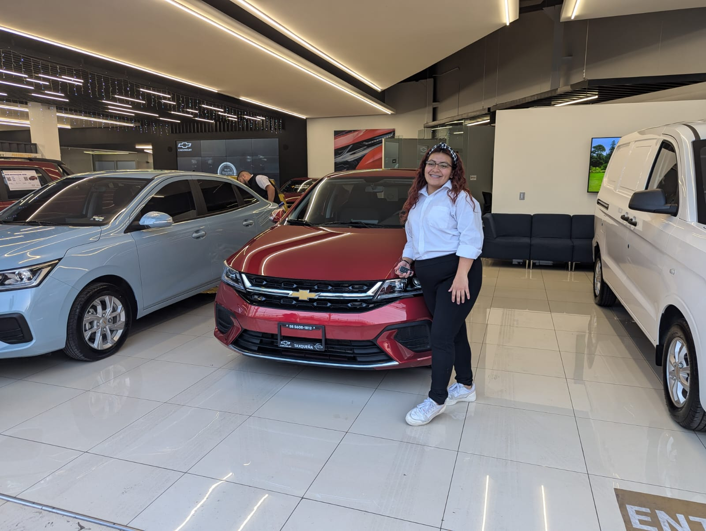
📍 Agencia Chevrolet - 9 de diciembre, 2024
Lo que pasó: Te compraste tu primer coche y me pediste que acompañara a ti y a tu familia a recogerlo.
Lo que sentí: Me encantó que me empezaras a hacer parte de tus metas y de tu familia. Sentí admiración y felicidad por ti, y me di cuenta que quiero estar ahí para apoyarte en el proceso de cada logro que alcances.
Capítulo 6: La Mujer que Me Inspira
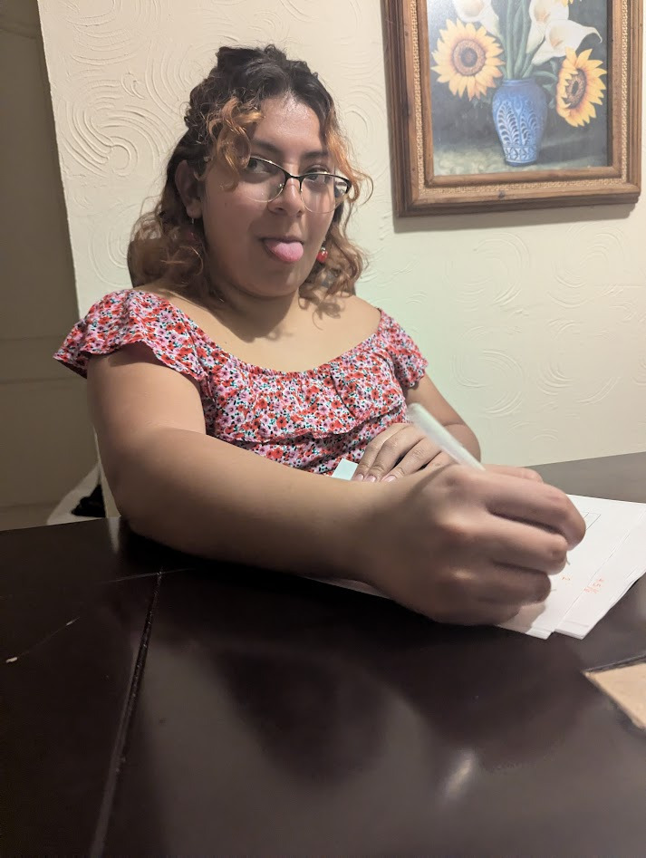
📍 Tu casa - 17 de marzo, 2025
Lo que pasó: Me pusiste a ayudarte a calificar exámenes. Eres maestra y amas lo que haces (aunque no pagan tan bien).
Lo que sentí: Te ayudo en lo que puedo porque a veces se te carga mucho el trabajo. Me inspiras a seguir dando el 100%, a ser dedicado y trabajador. Eres una mujer que lo tiene todo: pasión, inteligencia y corazón.
Capítulo 7: El Día que Supe lo Mucho que Te Amo
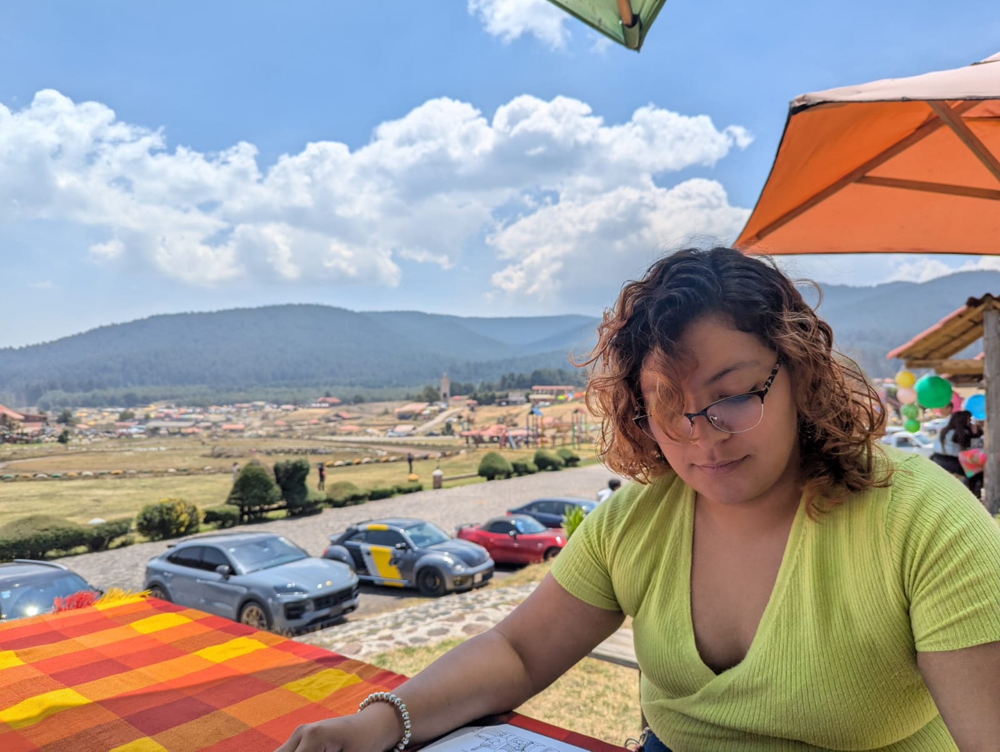
📍 La Marquesa - 4 de mayo, 2025
Lo que pasó: Fuimos a un lugar al que tu papá te llevaba de niña. Vimos un topo y tomamos pulque.
Lo que sentí: Aquí me di cuenta de lo mucho que te amo, aunque me daba miedo dejarme llevar, por ser tan nuevo en esto. No dejaba de verte y pensar en lo afortunado que soy. Me encanta tu cabello, tu sonrisa, la manera en que me miras. Cada detalle de ti se me graba en el corazón.
Capítulo 8: Celebrar Tu Existencia
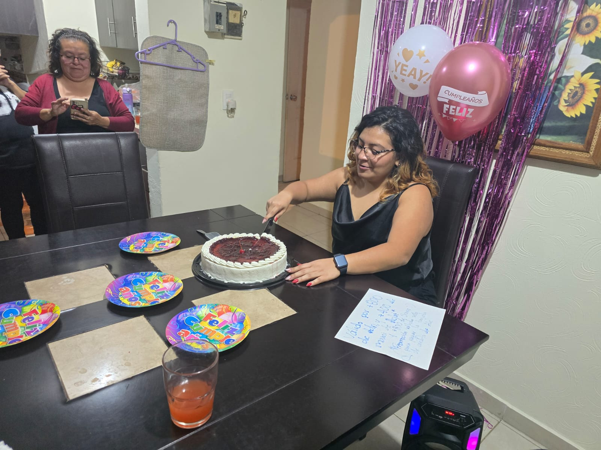
📍 Tu cumpleaños!!! - 8 de noviembre, 2025
Lo que pasó: Festejamos en tu casa con pastel, familia y amigos, luego fuimos a un antro.
Lo que sentí: No me gustan mucho los antros, pero me hace feliz acompañarte y verte disfrutar. Quiero estar en todos tus cumpleaños porque mereces ser festejada cada día de tu bendita existencia. Eres la razón de que este mundo sea más bonito, o al menos el mío lo haces precioso.
Capítulo 9: Bad Bunny y Tu Felicidad
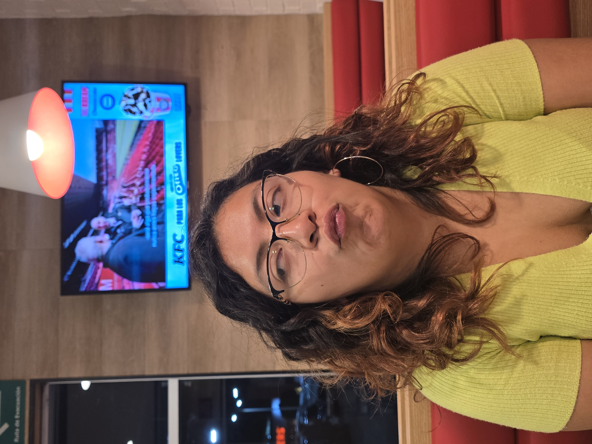
📍 KFC y Concierto de Benito - 15 de diciembre, 2025
Lo que pasó: No era fan de Bad Bunny, pero esa noche fue mágica en su concierto.
Lo que sentí: Ahora me gusta Bad Bunny porque te vi disfrutar a uno de tus artistas favoritos. Cada que lo escucho pienso en ti: en cómo cantabas, gritabas, sonreías. Ver y sentir que eres feliz me llena el corazón, la vida, el alma.
Capítulo 10: Equipo para Construir Lo Que Sea (menos legos porque no los terminamos)
📍 Tu casa - 30 de diciembre, 2025
Lo que pasó: Armamos una casa de jengibre juntos.
Lo que sentí: Me encantan estos planes de novios. Pasar tiempo contigo es mi momento favorito. Ser un equipo para cumplir un objetivo, aunque sea armar una casa de jengibre, me hace pensar en todo lo que podemos construir juntos en la vida.
Capítulo 11: Mi Corazón Es Tuyo
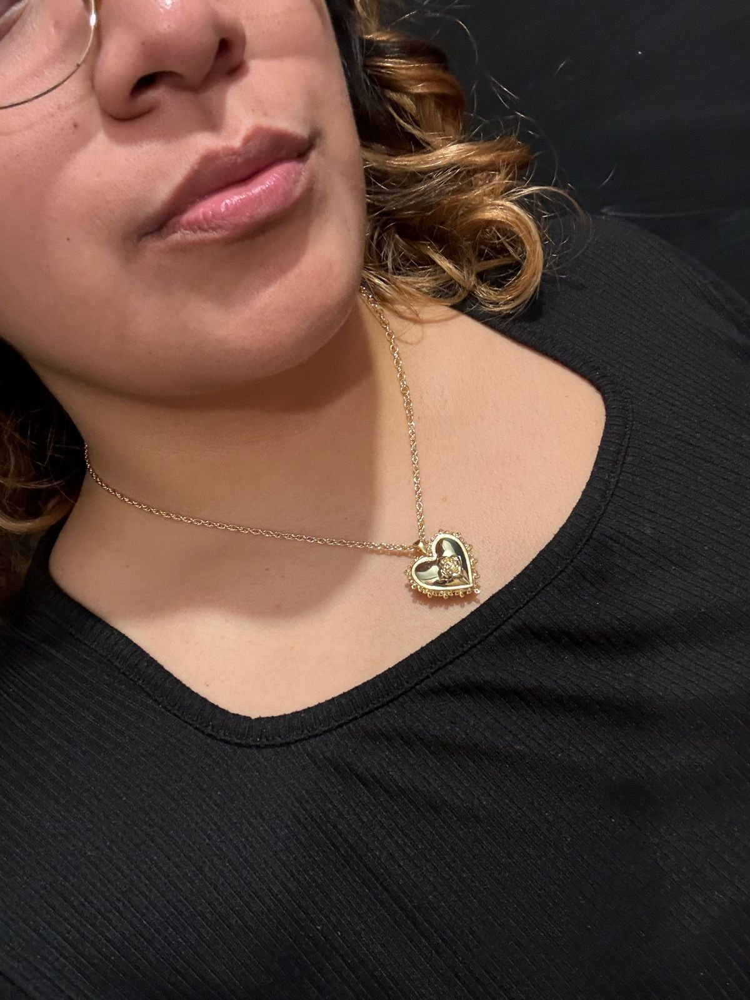
📍 Tu cuarto(?) - 1 de agosto, 2025 (desfasado en el orden temporal, pero es lo que quiero que tengas presente)
Lo que pasó: Una foto de ti usando el collar en forma de corazón que te regalé.
Lo que sentí: Esta foto representa algo que no quiero que olvides: mi corazón es tuyo. Vives en él desde hace mucho y creo que ya es más tuyo que mío. Te extraño cada segundo que no estoy junto a ti, y cuando estoy contigo, no dejo de verte y pensar en cuánto te amo y qué feliz me haces.
Nuestros Momentos Espontáneos (fotos bonitas y algunas random que te he tomado)
Todas esas risas, miradas y locuras que no necesitan palabras...
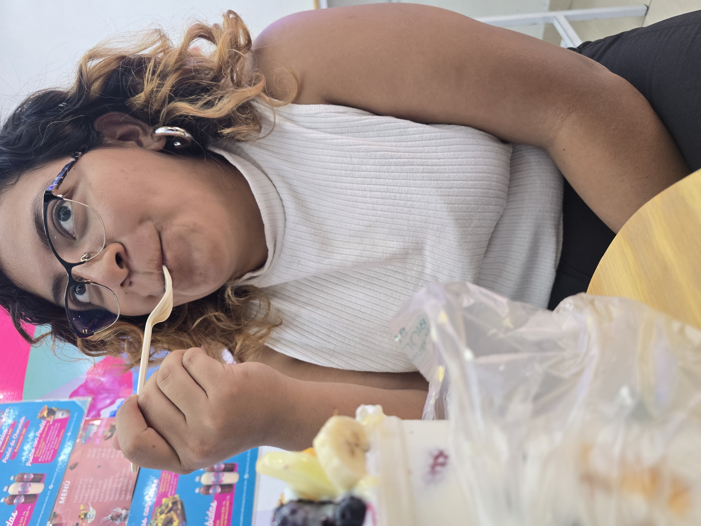
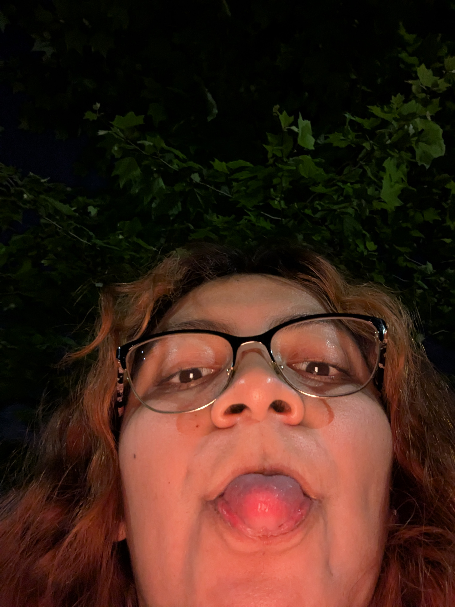
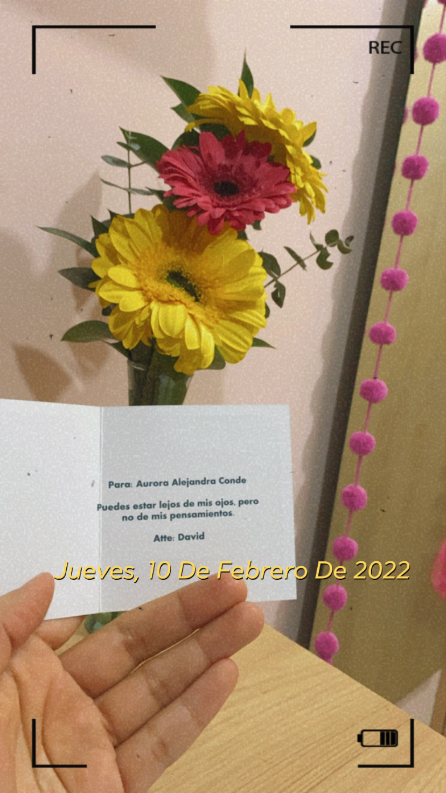
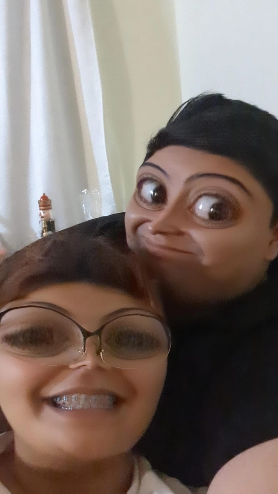
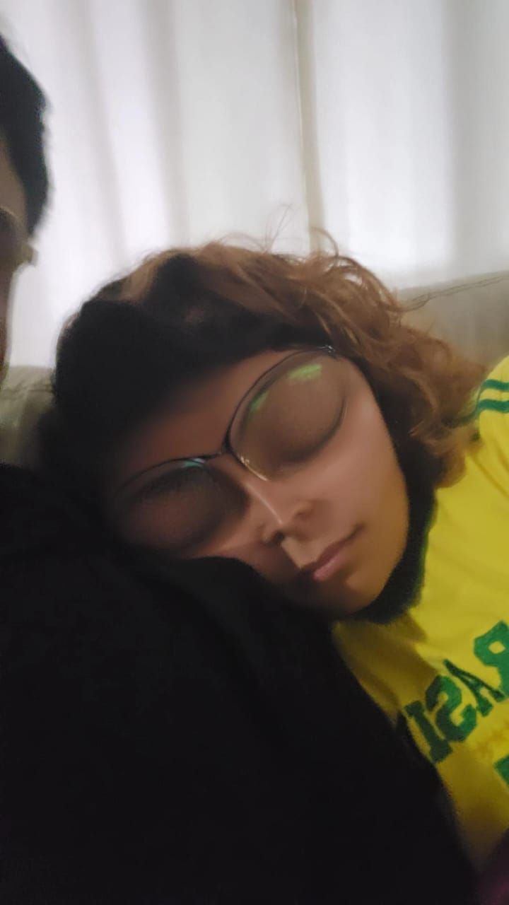
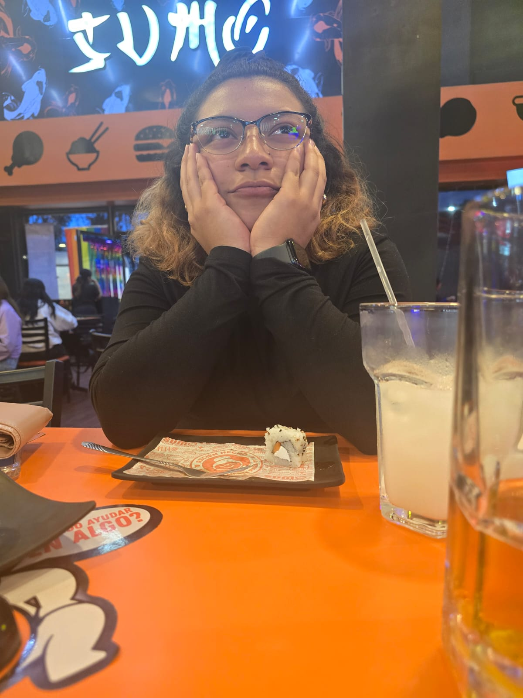
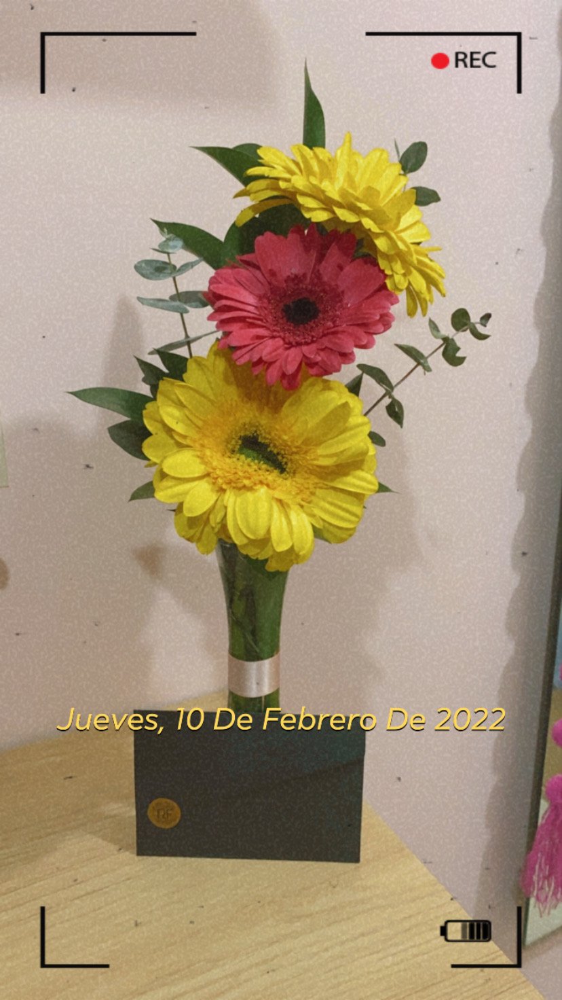
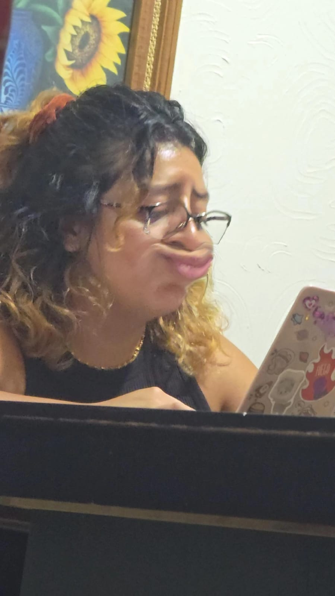
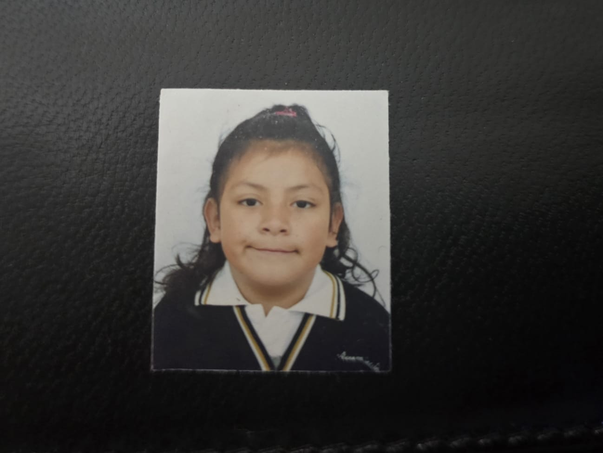
Cada una de estas fotos es un latido de felicidad que tengo muy presente.
Sonrisas robadas, miradas cómplices, momentos que simplemente fueron y que quiero vivir aun más
TE AMO MUCHO !!!
Nuestro Pasado, el Presente y un Futuro
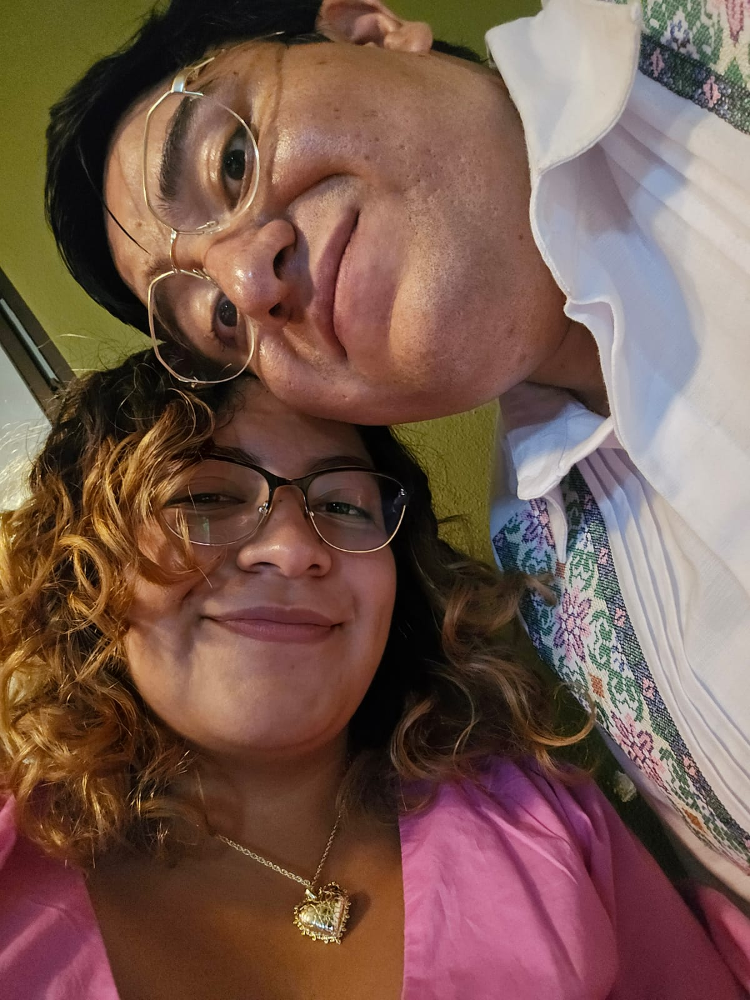
Alejandra, este viaje por algunos recuerdos es más que una colección de fotos. Es el mapa de cómo me transformaste.
Antes de ti, era un hombre incompleto. Tú no me "completaste" —me enseñaste. Me enseñaste a sentir con todo el pecho, a dejar que la ternura y la vulnerabilidad no fueran debilidades, sino mi mayor fortaleza. Me enseñaste a vivir enamorado, no solo de ti, sino de la vida que construimos día a día.
Cada uno de estos momentos que revivimos aquí fue un paso en mi transformación. De un hombre que solo existía, a un hombre que vive y siente gracias a ti. Tu amor, tu ternura, tu forma de ver el mundo... me cambiaron para bien. Me hicieron más humano, más amoroso, más presente.
Por eso, el anillo que hoy te doy no es solo un accesorio. Es mi promesa de que el hombre en el que me he convertido a tu lado, quiere caminar contigo hacia todo lo que viene. Es mi "sí" a nuestro futuro incierto, a vivir juntos miles de aventuras, a seguir creciendo juntos.
Este viaje por nuestras memorias termina aquí, pero nuestro camino juntos, como novios apenas comienza. Te prometo mi hoy, mi mañana y todos los días que vendrán.
Gracias por ser mi amiga, mi inspiración y el amor de mi vida.
Y si alguna vez dudas de mi amor, recuerda: Mi promesa está presente en tu mano derecha,
y mi corazón vive en cada recuerdo que compartimos.
Con todo mi amor, hoy y siempre, David
14 de febrero de 2026